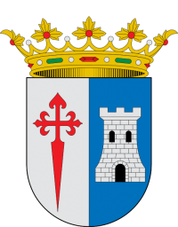

Proyectos

Pcmobileweb:
Proyecto de página web para la empresa Pc Mobile Informática
desarrollado en Wordpress con wooCommerce y Elementor

Ayuntamiento de Terrinches:
Proyecto de página web para el Ayuntamiento de Terrinches
desarrollado en Wordpress, con Base de datos.

Editor de Video:
Proyecto de edicion de video para
una ticktocker sobre temas de moda